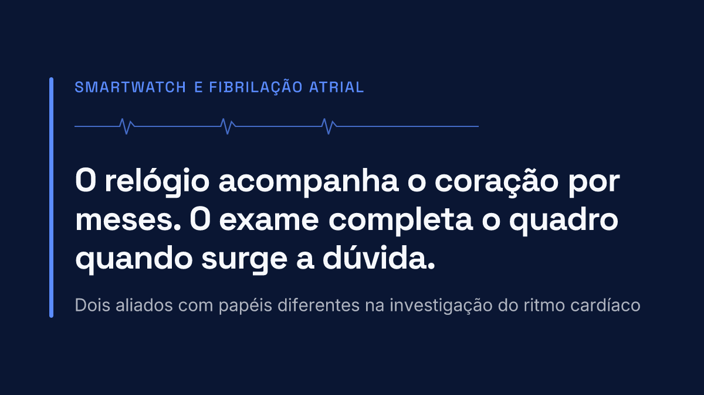
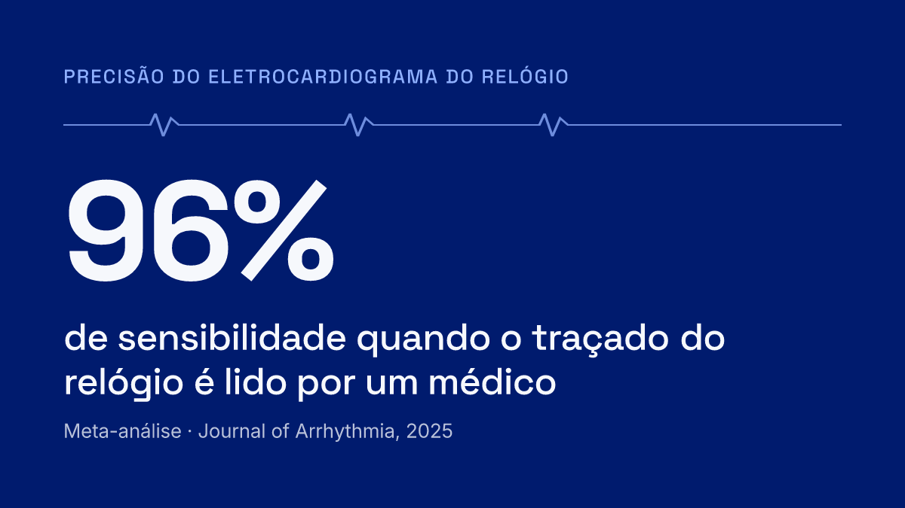
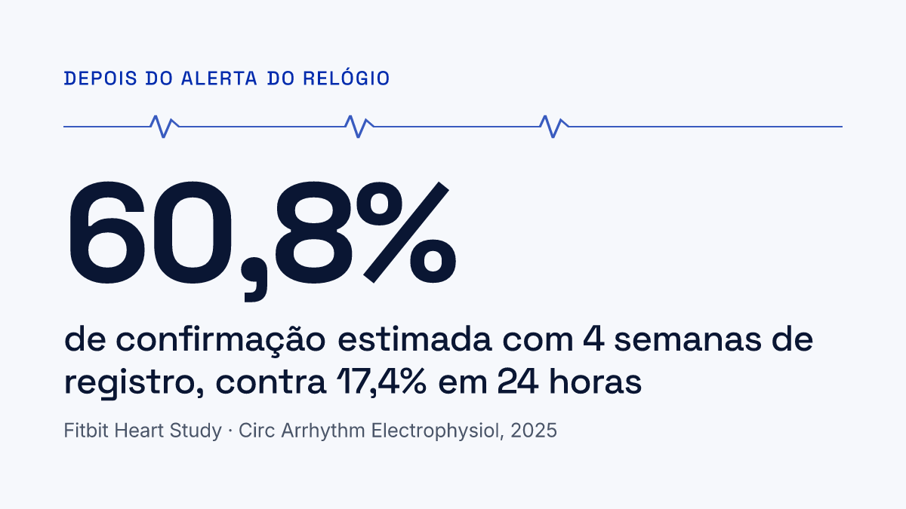

Resumo: smartwatch e fibrilação atrial
Relógios inteligentes detectam fibrilação atrial com boa precisão: lido por um médico, o eletrocardiograma do relógio teve sensibilidade de 96% e especificidade de 95% em uma meta-análise recente. Quando os alertas se repetem, quando o que você sente não combina com o que o relógio mostra ou quando fica a dúvida, uma monitorização contínua de vários dias ajuda o médico a completar o quadro.

Milhões de pessoas usam hoje um relógio capaz de acompanhar o ritmo do coração ao longo do dia. Para muita gente, foi o próprio relógio que deu o primeiro sinal de uma fibrilação atrial que nunca tinha sido percebida, e isso é uma conquista importante da tecnologia. A fibrilação atrial é a arritmia sustentada mais comum do mundo e está ligada a um risco maior de AVC, por isso descobri-la cedo faz diferença.
Junto com essa conquista surgiu uma situação nova nos consultórios: pacientes que chegam com dezenas de registros, notificações em horários diferentes e muitas perguntas. O alerta foi real? Por que apareceu só uma vez? Por que senti o coração disparar e o relógio não mostrou nada? Este artigo explica como o relógio funciona, o que os estudos dizem sobre ele e em quais situações um exame mais longo ajuda a responder essas dúvidas.
Como o relógio percebe o ritmo do coração?
A maioria dos relógios inteligentes usa duas tecnologias diferentes, e vale a pena conhecer cada uma delas porque os avisos que geram têm significados distintos.
O sensor óptico, que trabalha sozinho
Na parte de baixo do relógio existe uma luz que acompanha o fluxo de sangue no pulso. Com ela o aparelho estima a frequência cardíaca e percebe quando o intervalo entre os batimentos fica irregular por um tempo. Esse sensor funciona em segundo plano, sem que você precise fazer nada, e é ele que dispara a notificação de ritmo irregular.
O eletrocardiograma, que você aciona
Alguns modelos também registram um eletrocardiograma de uma derivação quando você encosta o dedo na coroa ou na lateral do relógio por cerca de 30 segundos. Esse registro mostra a atividade elétrica do coração de verdade, pode ser salvo em PDF e levado ao médico. No Brasil, a função de eletrocardiograma só fica disponível nos modelos cujo software tem registro na Anvisa.
As duas tecnologias se completam: o sensor óptico vigia o tempo todo e chama a sua atenção, e o eletrocardiograma permite registrar o ritmo no momento em que algo diferente acontece.
O relógio é confiável?
Os estudos mostram que sim, e em escala impressionante. Uma meta-análise publicada em 2025 reuniu as pesquisas sobre o eletrocardiograma de relógio na detecção de fibrilação atrial. Quando a leitura foi feita pelo próprio algoritmo do relógio, a sensibilidade foi de 86% e a especificidade de 94%. Quando o traçado foi lido por um profissional treinado, esses números subiram para 96% e 95%.[1] O relógio acerta muito, e acerta ainda mais quando um médico olha o registro.

A notificação do sensor óptico também foi testada em estudos muito grandes. No Apple Heart Study, com 419.297 participantes, a notificação de pulso irregular coincidiu com fibrilação atrial no eletrocardiograma em 84% das vezes em que as duas coisas puderam ser comparadas ao mesmo tempo.[2] No Fitbit Heart Study, com 455.699 participantes, esse valor chegou a 98,2%.[3]
Os mesmos estudos trazem um detalhe que ajuda a entender as dúvidas de muitos pacientes. Quando as pessoas que receberam o alerta usaram depois um adesivo de eletrocardiograma por cerca de uma semana, a fibrilação atrial apareceu em 34% delas no estudo da Apple e em 32% no da Fitbit.[2][3] Isso acontece porque a fibrilação atrial costuma ir e voltar: o alerta pode ter sido verdadeiro e a arritmia simplesmente não se repetir nos dias seguintes.
O relógio encontra arritmias que passariam despercebidas?
Encontra. Em 2026 o Journal of the American College of Cardiology publicou o estudo EQUAL, que sorteou 437 pacientes acima de 65 anos com risco aumentado de AVC entre usar um relógio inteligente por seis meses ou seguir o acompanhamento habitual. A fibrilação atrial nova foi encontrada em 9,6% de quem usou o relógio e em 2,3% do grupo de acompanhamento habitual. Vários episódios sem nenhum sintoma só foram descobertos no grupo do relógio.[4]
Esse resultado reforça o papel do relógio como ferramenta de vigilância. Ele acompanha a pessoa por meses, algo que nenhum exame tradicional faz, e por isso consegue flagrar episódios raros e silenciosos.
Quando vale completar o relógio com um exame mais completo?
O relógio foi desenhado para reconhecer principalmente um ritmo, a fibrilação atrial, em registros curtos. Em algumas situações o médico precisa de mais informação do que esses registros conseguem oferecer, e é aí que a monitorização contínua entra como complemento. As situações mais comuns são:
- Alertas que se repetem, ou um alerta isolado que não voltou a aparecer;
- Registros que o relógio classificou como inconclusivos ou que não conseguiu classificar;
- Palpitações, tontura ou cansaço sem nenhuma alteração no relógio;
- Muitos registros acumulados e a sensação de não saber o que eles significam;
- Necessidade de saber quanto tempo a arritmia dura ao longo do dia e da noite;
- Suspeita de outros ritmos, como extrassístoles frequentes, pausas ou taquicardias, que o relógio não foi feito para classificar.
Existe ainda um ponto que surpreende muita gente: aquilo que sentimos nem sempre coincide com o que o coração está fazendo. Um estudo brasileiro com monitor de eventos externo acompanhou 112 pacientes. Os sintomas foram registrados em 66% deles, mas só em 19% desses casos o sintoma coincidiu com uma arritmia importante. Ao mesmo tempo, 9,8% dos pacientes que não sentiram nada tinham uma arritmia significativa no registro.[5] Um registro contínuo, que grava todos os batimentos e não só os momentos em que você lembra de olhar o relógio, ajuda a separar essas situações.
Por que a duração da monitorização faz diferença?
Como a fibrilação atrial vai e volta, quanto mais tempo o coração é registrado, maior a chance de o episódio aparecer. Uma análise de 2025 do Fitbit Heart Study estimou, para pessoas que tinham recebido um alerta do relógio, quanto cada estratégia de exame conseguiria confirmar[6]:
- Eletrocardiograma de 10 segundos: 7,6%;
- Holter de 24 horas: 17,4%;
- Monitorização de 1 semana: 32,2%;
- Monitorização de 2 semanas: 46,8%;
- Monitorização de 4 semanas: 60,8%.

O consenso internacional de monitorização eletrocardiográfica ambulatorial (ISHNE-HRS) segue a mesma linha e afirma que o rendimento do exame cresce conforme aumenta o tempo de registro.[7] Por isso o médico pode indicar uma monitorização de vários dias mesmo depois de um eletrocardiograma normal no consultório.
Relógio e monitorização prolongada: como um completa o outro?
Os dois têm objetivos diferentes e funcionam melhor juntos. O relógio acompanha você por meses e chama a atenção para algo diferente. A monitorização prolongada registra todos os batimentos por dias seguidos, com várias derivações, e entrega ao médico um laudo completo.
A diretriz europeia de fibrilação atrial de 2024 pede que o diagnóstico seja confirmado por um traçado de eletrocardiograma revisado por médico, que pode ser um registro de derivação única de pelo menos 30 segundos ou um eletrocardiograma de 12 derivações.[8] O eletrocardiograma do relógio pode cumprir esse papel quando tem boa qualidade e é avaliado pelo médico. Quando o registro deixa dúvida, a monitorização prolongada oferece a confirmação de forma mais completa.
O que fazer quando o relógio avisar?
- Se o relógio tiver eletrocardiograma, faça um registro na hora, sentado e com o braço apoiado, para que o médico veja o ritmo daquele momento;
- Anote o horário, o que você estava fazendo e o que sentiu, mesmo que tenha sido nada;
- Salve ou exporte os registros em PDF para levar à consulta;
- Não comece nem suspenda nenhum remédio por conta própria por causa do alerta;
- Converse com seu médico, que vai avaliar os registros e decidir se uma monitorização mais longa vai ajudar.
Diante de dor no peito, falta de ar intensa, desmaio, fraqueza em um lado do corpo, dificuldade para falar ou boca torta, procure imediatamente um pronto-socorro. Nessas situações não espere a consulta nem um novo registro do relógio.
Conclusão
O relógio inteligente mudou a forma como a fibrilação atrial é descoberta. Ele acompanha o coração por longos períodos, tem boa precisão comprovada em estudos com centenas de milhares de pessoas e já encontrou arritmias que passariam sem nenhum sinal. Vale a pena usar e levar a sério o que ele mostra.
Quando os registros geram mais dúvida do que resposta, a monitorização contínua de vários dias entra como complemento: registra todos os batimentos, avalia outros ritmos além da fibrilação atrial e entrega ao médico um laudo completo. Relógio e exame trabalham juntos, e a conversa com o seu médico é o caminho para decidir o próximo passo.
Referências
- Iqhrammullah M, Abdullah A, Hermansyah, et al. Accuracy and interpretability of smartwatch electrocardiogram for early detection of atrial fibrillation: a systematic review and meta-analysis. Journal of Arrhythmia, 2025. PubMed 40406413
- Perez MV, Mahaffey KW, Hedlin H, et al. Large-Scale Assessment of a Smartwatch to Identify Atrial Fibrillation. New England Journal of Medicine, 2019. PubMed 31722151
- Lubitz SA, Faranesh AZ, Selvaggi C, et al. Detection of Atrial Fibrillation in a Large Population Using Wearable Devices: The Fitbit Heart Study. Circulation, 2022. PubMed 36148649
- van Steijn NJ, Blommestijn IS, Blok S, et al. Enhanced Detection and Prompt Diagnosis of Atrial Fibrillation Using Apple Watch: A Randomized Controlled Trial (EQUAL). Journal of the American College of Cardiology, 2026. PubMed 41569211
- Epifanio HB, Katz M, Borges MA, et al. The use of external event monitoring (web-loop) in the elucidation of symptoms associated with arrhythmias in a general population. Einstein (São Paulo), 2014. PubMed 25295448
- Lubitz SA, McConnell MV, Selvaggi C, et al. Wearable Irregular Heart Rhythm Detection Recurrences and Electrocardiographic Atrial Fibrillation Confirmation: The Fitbit Heart Study. Circulation: Arrhythmia and Electrophysiology, 2025. PubMed 40557492
- Steinberg JS, Varma N, Cygankiewicz I, et al. 2017 ISHNE-HRS expert consensus statement on ambulatory ECG and external cardiac monitoring/telemetry. Annals of Noninvasive Electrocardiology, 2017. PubMed 28480632
- Van Gelder IC, Rienstra M, Bunting KV, et al. 2024 ESC Guidelines for the management of atrial fibrillation, desenvolvidas em colaboração com a EACTS. European Heart Journal, 2024. PubMed 39210723
Conteúdo com finalidade educativa. As informações apresentadas não substituem avaliação médica individualizada. Em caso de sintomas ou dúvidas sobre os registros do seu relógio, procure orientação do seu cardiologista ou eletrofisiologista.